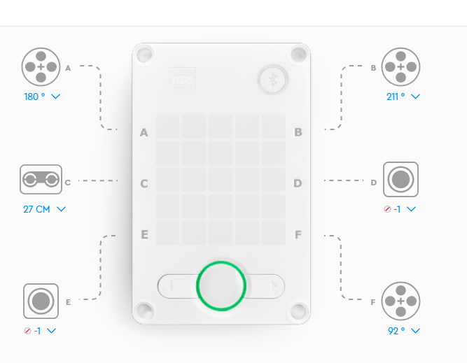
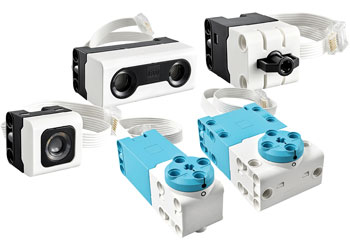
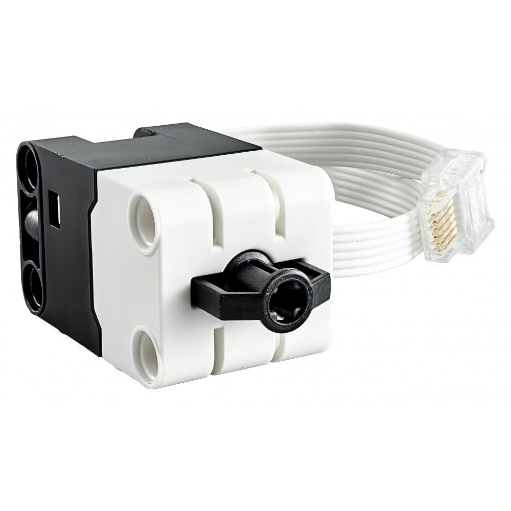
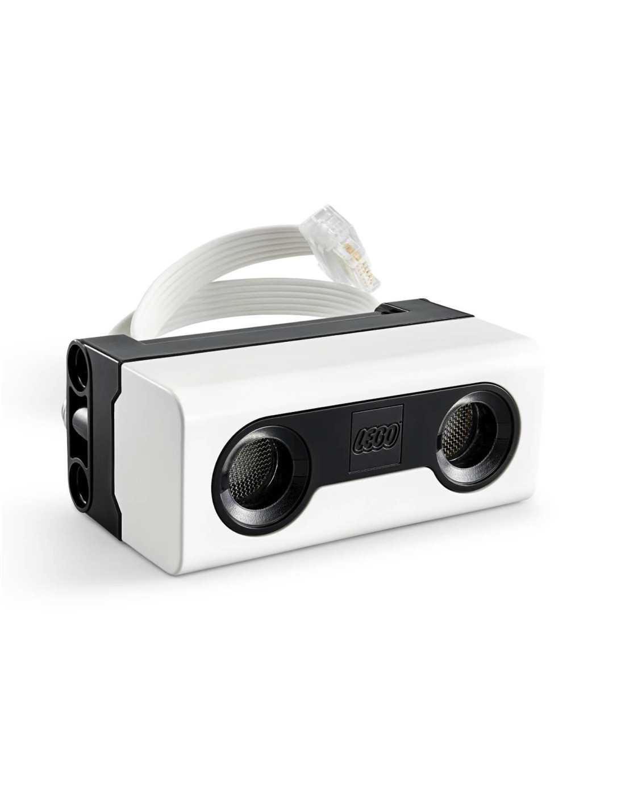
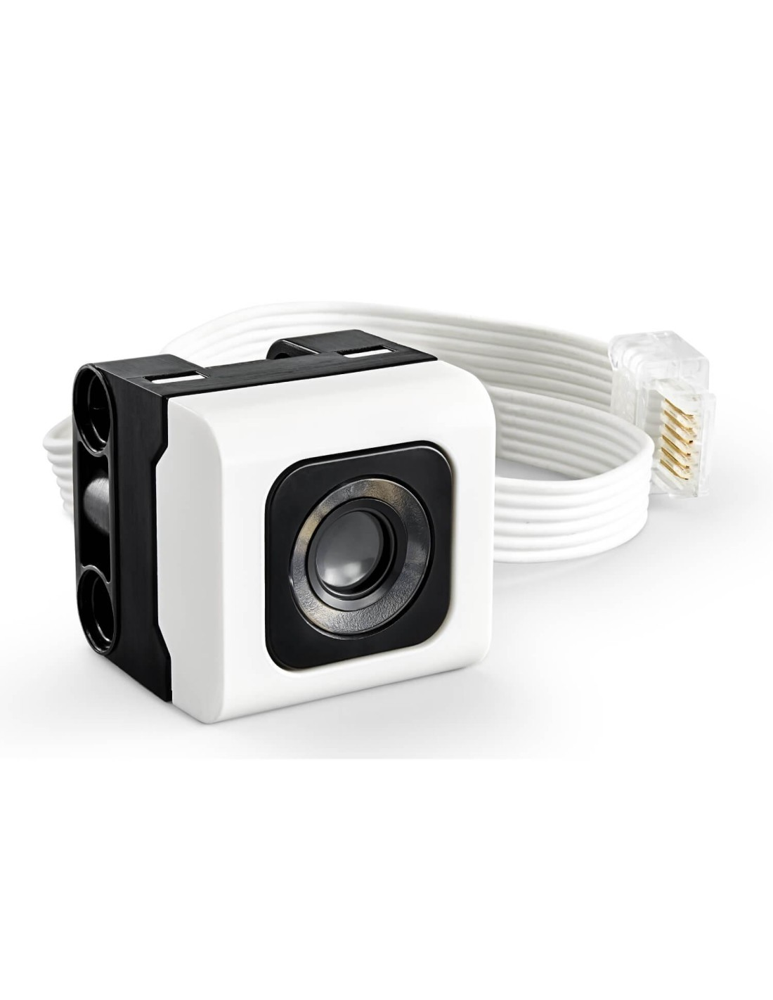

Kit Lego Spike Prime
Para abordar los retos de este taller hemos partido del kit de Lego(R) Spike Prime. Consta de un hub o ladrillo de control y una serie de sensores internos y externos que detallaremos seguidamente. Con este kit hemos desarrollado dos vehículos para la exploración de otros habitat exteriores a la Tierra, uno con ruedas y otro con cadena. La programación y retos son idénticos, se proporcionan las librerías para que la selección del vehículo no afecte a la programación de los mismos.
|  |
Este es el aspecto del ladrillo de control o hub en el cual se conectan todos lo sensores y motores del rover. Cada uno de los elementos conectados se identifican con una letra que identificará el puerto de conexión en el momento de la programación. Por ejemplo, para definir el movimiento del rover se emplearán dos motores controlados coordinadamente por el hub. Definiremos el bloque de movimiento con los motores conectados a los puertos Ay B, nunca se trabajará de manera independiente con cada motor sino con un bloque específico de movimiento. Los sensores de colores se conectan, el lateral al puerto E, y el de suelo al puerto D. Éste último puede sustituirse por el sensor de fuerza para las misiones que lo requieran. |
Detallemos los sensores de los que disponemos que se pueden conectar a los puertos del hub
|  |  |  |  |
| Conjunto de sensores de color, distancia y motores | Sensor de fuerza usado como final de carrera. Se puede conectar al puerto F. | Sensor de distancia basado en ultrasonidos | Sensor de color y de luz reflejada. El lateral se conecta al puerto E. |
Además de los sensores externos, el hub dispone de varios sensores internos. El que usaremos por ser determinante para nuestros objetivos es el giróscopo. Este sensor permite obtener la inclinación del ladrillo en los ejes X e Y (alabeo y cabeceo) y además obtener el giro relativo (ángulo de guiñada) del hub, muy importante para controlar los giros.
Con este conjunto de recursos y los elementos característicos de Lego(R) vamos a construir dos robot de suelo con características diferentes y vamos a desarrollar una serie de retos que nos van a permitir acercarnos al apasionante mundo de la robótica educativa.